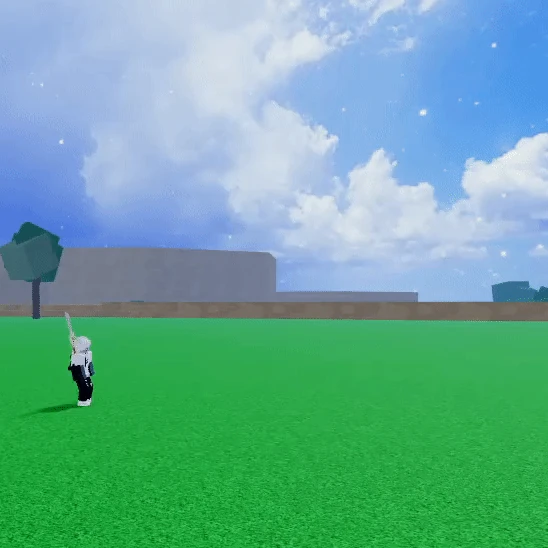
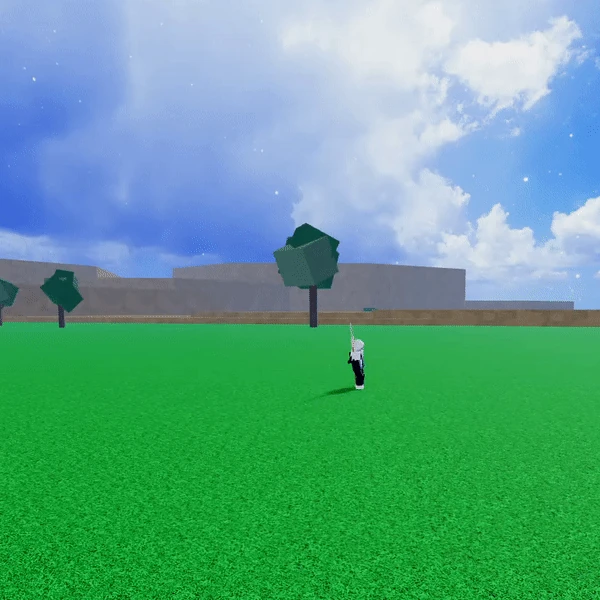
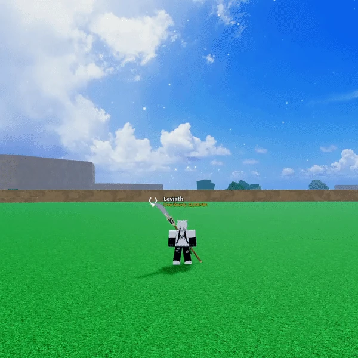
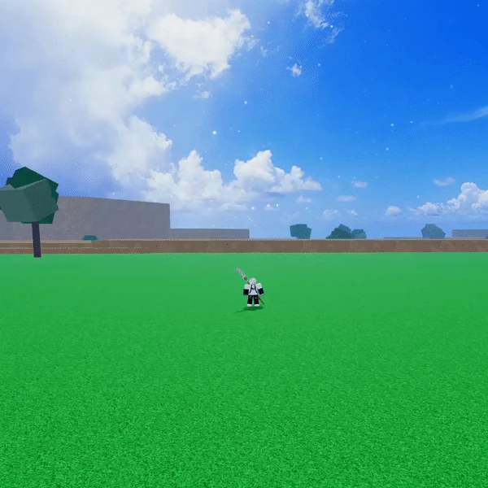
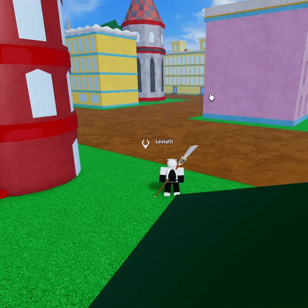

HOME
HOME
Spring is a Common Natural-type Blox Fruit that costs $60,000 or RB 180 from the Blox Fruit Dealer.
Spring is arguably of the worst fruits in the game for grinding and PvP. It has surprisingly good mobility, but it's infamously known for being bad because it lacks PvP potential and grinding potential. Other Common fruits such as Chop or Bomb are more highly recommended as they outclass Spring in most scenarios.
The user's right forearm becomes a spring, launching a punch at the target.
The user's knees become springs, leaping to where they aimed, and dealing damage when it hits the target.
The user turns their legs into springs, stretches a decent distance up, and then withdraws, causing a small-sized crater which deals decent damage to enemies.
The user turns their legs into springs, bouncing around a square-shaped AOE area, hitting the target various times before withdrawing and turning their legs back to normal.
The user transforms their legs into springs and leaps. The user can bounce on walls, gaining speed and momentum while doing so.
